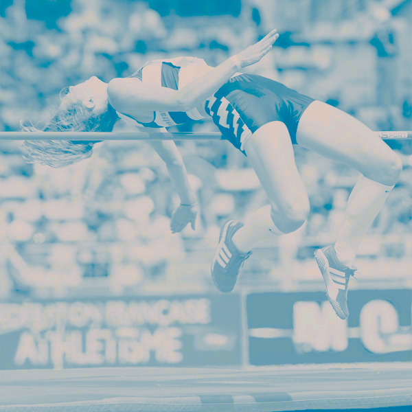

Devon County

Welcome to Devon County Athletic Association the umbrella organisation for Devon County athletic clubs. Devon County AA promote County championships in Track and Field and Cross Country, we also organise an Indoor Sports Hall league for young athletes and the Track and Field Devon Open series for all age groups 8 years old and upwards.
We support road running and Fell running events such as Devon's oldest road event the Ross Shield team race, currently held within Tiverton Harriers Bampton - Tiverton Easter Monday race. Further information on all these events under the listed headings
Disciplines
Below are pages for specifc atheltics disciplines.
Cross Country & Fell Running
Track & Field Athletics
Sportshall Athletics
Road Running